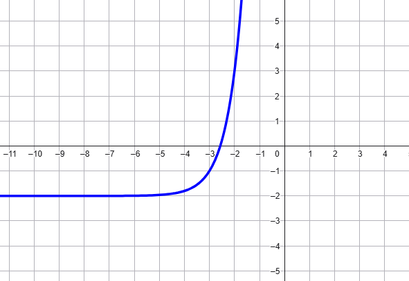

Rappresentare il grafico della funzione \(f(x) = 3^{x - 1} + 2\)
Esercizio
Stabilire la legge che definisce la funzione rappresentata dal seguente
grafico

Soluzione
\[
f(x) = 5^{x + 3} - 2
\]
Simmetrie del grafico di una funzione
Simmetria verticale
Consideriamo una funzione \(f\)
\[
y = f(x)
\]
Il grafico della funzione \(g\) definita come
\[
y = -f(x)
\]
si ottiene effettuando una simmetria del grafico della funzione \(f\) rispetto all'asse
\(\boldsymbol{x}\).
\(\triangleright\) Il punto del grafico della funzione \(f\) evidenziato in nero può essere trascinato;
in rosso viene disegnato il corrispondente punto simmetrico appartenente al grafico
della funzione \(g\).
Nel seguente video vengono spiegate le ragioni di questo fenomeno.
Simmetria orizzontale
Consideriamo una funzione \(f\)
\[
y = f(x)
\]
Il grafico della funzione \(g\) definita come
\[
y = f(-x)
\]
si ottiene effettuando una simmetria del grafico della funzione \(f\) rispetto all'asse
\(\boldsymbol{y}\).
\(\triangleright\) Il punto del grafico della funzione \(f\) evidenziato in nero può essere trascinato;
in rosso viene disegnato il corrispondente simmetrico appartenente al grafico
della funzione \(g\).
Nel seguente video vengono spiegate le ragioni di questo fenomeno.